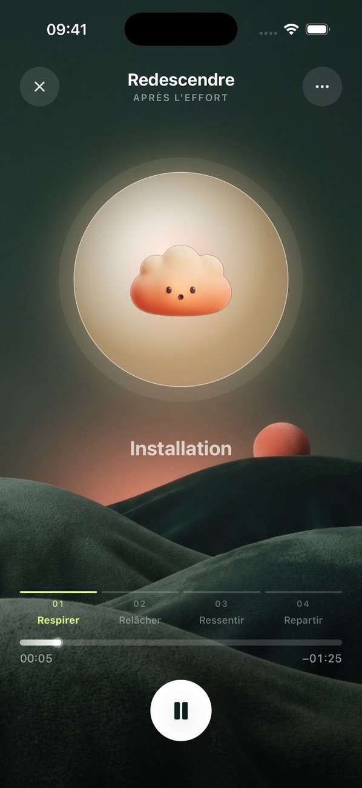

iPhone et iPad · gratuit pendant la bêta

Un moment pour redescendre.
Après le sport, après la journée, avant de dormir. Une voix vous guide : le souffle ralentit, le corps se relâche, la tête se pose.
De quoi avez-vous besoin ?
Le cœur encore haut après la séance ? Une minute trente, debout, pour le laisser redescendre.
Sans carte bancaire · de 90 secondes à quelques minutes · les études citées
0 0
battements par minute, avant puis après une séance (exemple)
0
la séance la plus courte, debout, les yeux ouverts
0
le doigt sur l'appareil photo, et votre pouls s'affiche
0 0
inspirer, puis souffler : six respirations par minute, le rythme qui ralentit le cœur
Dans une journée
Plusieurs moments, un même geste.
On arrête la montre, on ferme l'ordinateur, on éteint la lumière. Le corps, lui, reste lancé : le cœur bat encore vite, la tête tourne. Replere s'occupe de ces minutes-là.


La compagne de vos séances
Souffle vous ressemble.
Souffle est le petit nuage de Replere. Elle respire avec vous pendant la séance et change d'humeur avec votre journée. Elle ne gronde pas et ne compte pas les jours manqués.
- Essouffléequand vous arrivez, le cœur encore haut
- Calmequand le souffle s'est posé
- Fièrequand vous tenez votre rythme
- Endormiele soir, après la dernière séance
Nouveau · Sans montre
Votre cœur, mesuré par l'appareil photo.
Posez l'index sur l'objectif arrière de l'iPhone. Le flash éclaire le doigt, et à chaque battement le sang change très légèrement la couleur de la peau. Replere lit ce rythme. C'est le principe des oxymètres de doigt.
Trente secondes avant la séance, trente secondes après. Vous voyez de combien votre cœur est redescendu.
- Avant
- 112 bpm
- Après
- 97 bpm
- Écart
- −15
Exemple de mesure. Une estimation pour comparer avant et après, pas une mesure médicale. Une montre ou une ceinture cardio restent plus précises, et Replere les lit aussi. Aucune image n'est gardée.

Une séance, quatre temps
Respirer, relâcher, ressentir, repartir.
- 01RespirerUn souffle lent, l'expiration plus longue que l'inspiration. Le cœur redescend d'un cran à chaque respiration.
- 02RelâcherLa voix vous guide vers ce qui a travaillé : les jambes après une course, les épaules après une journée d'écran, tout le corps le soir.
- 03RessentirUn moment pour remarquer ce que vous ressentez, retrouver ce qui vous a fait du bien dans la journée, et le garder.
- 04RepartirLa voix vous ramène : les appuis, les yeux qui s'ouvrent, un étirement. Vous ne finissez pas endormi, vous repartez en forme pour la suite de la journée. Le soir, la séance vous laisse glisser vers la nuit.

La mémoire de soi
Votre semaine, en musique.
Chaque séance pose une phrase au bol chantant, chaque exercice ajoute des clochettes, chaque leçon une note grave. Le dimanche, vous écoutez ce que votre corps a composé. Et une fois par semaine, Replere vous remontre ce que vous aviez noté sept jours plus tôt.


Le mot du fondateur
J'ai créé Replere parce qu'on met beaucoup de soin dans ce qu'on fait, à l'entraînement comme au travail, et très peu dans les minutes qui suivent. Je voulais une app qui prenne soin du corps et de la tête, sans publicité ni promesse en l'air. Si quelque chose vous déplaît, écrivez à contact@replere.app. Je lis tout.
Anatole Pitron, fondateur · contact@replere.app
Avant d'essayer
Les questions qu'on nous pose.
Combien de temps dure une séance ?
De quatre vingt dix secondes à quelques minutes. La séance d'après effort la plus courte se fait debout, les yeux ouverts, encore en sueur.
Ça marche sans montre ?
Oui. Posez l'index sur l'appareil photo arrière trente secondes avant la séance, puis après. Le flash éclaire le doigt, l'app lit votre pouls, et vous voyez de combien votre cœur est redescendu. Une estimation pour comparer, pas une mesure médicale.
Et avec une Garmin, une Apple Watch ou une ceinture ?
Le cœur s'affiche en direct pendant la séance. La Garmin et la ceinture diffusent en Bluetooth, rien à installer sur la montre. L'Apple Watch passe par l'app Replere sur la montre et Apple Santé.
C'est gratuit ?
Pendant la bêta, tout est gratuit, sans carte bancaire. À la sortie sur l'App Store, les séances resteront gratuites. Replere Plus ajoutera les programmes et le détail de vos données, à 5,99 € par mois ou 39,99 € par an.
Où vont mes données de santé ?
Vos séances et vos données de santé restent sur votre iPhone. Seule exception, si vous connectez Garmin : vos entraînements passent, chiffrés, par un serveur de Replere en France, qui les efface dès que l'iPhone les a reçus. Pas de publicité, pas de traceur. La politique de confidentialité décrit ligne par ligne ce que l'app lit dans Apple Santé.
C'est prouvé ?
Les outils le sont en bonne partie. La respiration lente accélère le retour au repos après l'exercice, et le relâchement musculaire améliore le sommeil dans plusieurs essais. La sophrologie comme discipline a été moins étudiée. Les études et leurs limites sont citées. Replere n'est pas un dispositif médical.
Gratuit pendant la bêta
Essayez Replere ce soir, ou après votre prochaine sortie.
Toutes les séances restent gratuites. À la sortie sur l'App Store, Replere Plus ajoutera les programmes et le détail de vos données, à 5,99 € par mois ou 39,99 € par an. Vos données restent sur votre iPhone.
Sur ordinateur ? Scannez ce code avec l'appareil photo de votre iPhone.
Replere accompagne la récupération, ce n'est pas un dispositif médical. Ce que dit la recherche, sources comprises.
Photos : Yazid N, Alekon pictures, Daniel Lincoln, Diana Shchurova et Katharina Roehler, sur Unsplash.